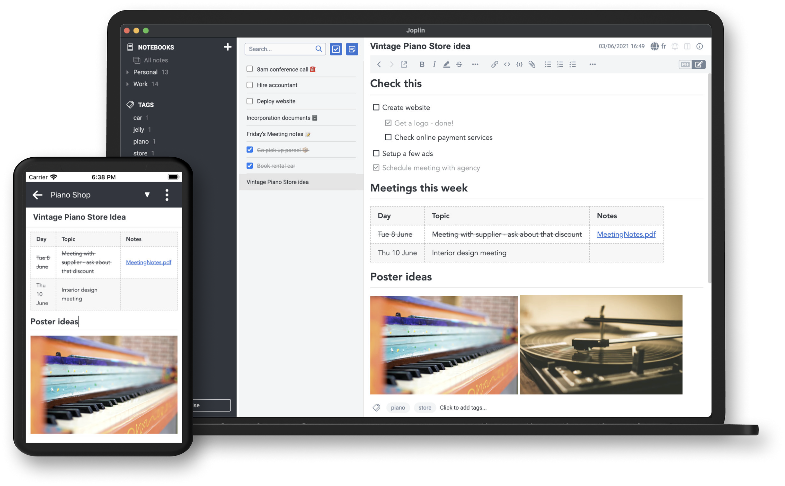

Your notes, anywhere you are
Capture your thoughts, save notes, documents and photos and access them from any device

Multimedia notes
Images, videos, PDFs and audio files are supported. Create math expressions and diagrams directly from the app. Take photos with the mobile app and save them to a note.

Work together
With Joplin Cloud, share your notes with your friends, family or colleagues and collaborate on them.
Save web pages
as notes
Use the web clipper extension, available on Chrome and Firefox, to save web pages or take screenshots as notes.


Customise it
to your needs
Customise the app with plugins, custom themes and multiple text editors (Rich Text or Markdown). Or write your own scripts and plugins using the Extension API.
100% your data
The app is open source and your notes are saved to an open format. Uses EndTo-End Encryption (E2EE) to ensure no-one but yourself can access your notes.